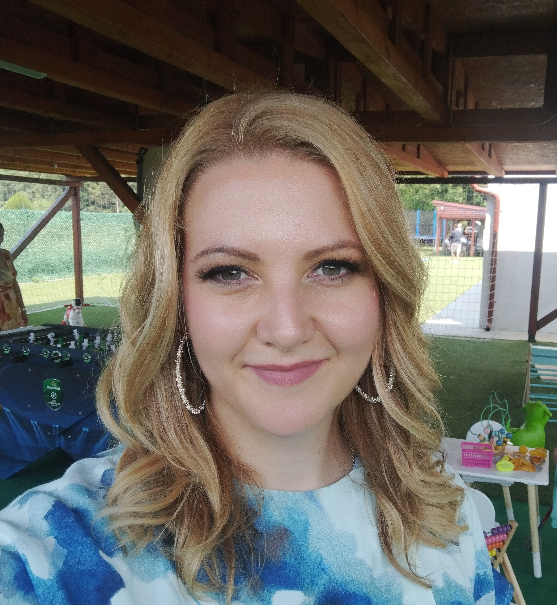

Building language
technology for the
under-resourced.
Computational linguist and data scientist. Ten years building NLP tools, corpora, and models for Serbian, Slovenian, and other South Slavic languages — bridging rigorous linguistic methodology with modern deep learning.

A computational linguist at the intersection of research & industry.
Dr. Branislava Šandrih Todorović is a Senior Data Scientist at NLB DigIT, working as an NLP expert in close collaboration with the Center of Excellence within NLB Bank in Ljubljana. She received her PhD at the University of Belgrade, Faculty of Mathematics in 2020 (Impact of Text Classification on Natural Language Processing Applications).
Her fields of research are machine learning and deep learning applied to the development of tools, resources, and models for the Serbian and Slovenian languages — from corpus construction and pre-training BERT and GPT-style models, to named entity recognition, terminology extraction, sentiment analysis, and authorship identification. She has published more than 30 papers in journals and proceedings of scientific conferences.
Until 2022, Branislava was engaged as a visiting researcher at the Research Group in Computational Linguistics at Wolverhampton University, Editorial Administrator for the Journal of Natural Language Engineering, and Editor in Chief of the Journal of Digital Humanities Infotheca. She is a member of the Society for Language Resources and Technologies JeRTeh.
Branislava has developed several NLP tools and established international connections through European projects (COST actions CA18231, CA16204, CA16105). During her PhD she attended summer schools on NLP and machine learning: LxMLS 2018, ESSLLI 2018, and DLinNLP 2019.
In 2021, she received the Annual Award of the Mathematical Institute of the Serbian Academy of Sciences and Arts in the field of computing for PhD students.
A long path through mathematics and language.
Summer Schools & Seminars
30+ peer-reviewed works.
Spanning journals, conference proceedings, books, and a PhD thesis — with focus on Serbian & Slovenian language resources, terminology, NER, and text classification.
Articles in Journals
PhD Thesis
Conference Proceedings
Proceedings & Books (Editor)
Abstracts in Books of Abstracts
Tools & resources I've built.
Publicly available NLP toolkits and language resources, mostly for Serbian — built over years of research, freely usable.
BiLTE
Bilingual Domain Terminology Extraction system, building terminology lists from parallel corpora.
↗NER & Beyond
Named Entity Recognition toolkit, with annotation, training, and evaluation in one place.
↗spaCy NER for Serbian
Publicly released spaCy-based Named Entity Recognition models for the Serbian language.
↗Good Dictionary Examples
Automatic extraction of pedagogically good sentence examples for dictionary entries.
↗Stylometric Feature Extractor
Authorship identification through extraction of stylometric features from text.
↗KaMP
By Danilo Aleksić — pronunciation pair extraction for teaching Serbian as a foreign language.
↗European Research Projects
Multi³Generation
Multi-task, Multilingual, Multi-modal Language Generation. Pan-European research network.
↗enetCollect
European Network for Combining Language Learning with Crowdsourcing Techniques.
↗Distant Reading
Distant Reading for European Literary History — computational analysis of literary corpora.
↗Serbian Language Resources
Serbian Language and Its Resources: Theory, Description, and Applications.
↗A decade across research and industry.
NLP solutions for the bank: sentiment, topic, and priority classification for client emails (Slovenian); voice transcription & sentiment; RAG-powered knowledge bases; BERT-based QA bots; LLM-based zero-shot/few-shot/RAG evaluation pipelines; contract classification; market-risk early-warning system. Led a 10+ member data science team (2023–2025).
COURSES TAUGHT
- Informatics for Librarians (BSc)
- Practicum of Informatics (BSc)
- Digital Text (BSc)
- Structure of Information (BSc)
- Language Technologies (BSc)
- Multimedia Documents (BSc)
- Information Retrieval (BSc)
- Advanced Methods in Information Retrieval (MSc)
- Advanced Language Technologies (MSc)
- Structuring and Management of Web Content (MSc)
- Programming for Linguists (MSc)
- Introduction to Cognitive Linguistics (MSc)
- Natural Language Processing (PhD)
- Machine Learning (PhD)
- Programming (BSc)
- Introduction to Computer Architecture (BSc)
- Object-Oriented Programming (BSc)
Software Development
Students I've guided.
Master Students
- Milica Vasković, Faculty of Philology, UB: Information and Media Literacy in the School Library of the 21st Century. Defended 01.06.2021 — supervisor.
- Sonja Lukić, Faculty of Philology, UB: Hate Speech in Serbian and Spanish Tweets. Defended 26.02.2021 — defense committee member.
- Petar Popović, Faculty of Philology, UB: Technical Support for Corpora Preparation. Defended 30.09.2020 — defense committee member.
- Anastasja Mandić, Faculty of Philology, UB: Automatic Conversion of e-bibliographies from BibTeX to BibLaTeX. Defended 27.09.2018 — defense committee member.
PhD Students
- Olivera Kitanović, Faculty of Mining and Geology, UB: An Ontology-Based Model for Risk Management in Mining. Defended 16.07.2021 — committee member.
- Tanja Ivanović, Faculty of Philology, UB: Terminology Development in Power Engineering Based on Natural Language Processing Methods. Defended 09.03.2022 — committee member.
Awards, editorial roles, and program committees.
Awards & Internships
- Annual Award of the Mathematical Institute of the Serbian Academy of Sciences and Arts in the field of computing for PhD students, 2021. ↗
- Zoran Đinđić Internship Program of German Business, 2014. ↗
- Dositeja Internship, 2014. ↗
- Best Students of the City of Pančevo, 2013–2015.
- Best Students of Faculty of Mathematics, 2012.
- Ministry of Education, Science and Technology Advancement Internship, 2011–2015.
Invited Seminars
- EMTTI 8-week LaTeX workshop, University of Wolverhampton, UK — Feb–Apr 2021.
- EMTTI modules on Corpus-based Translation, Terminology, Lexicography and Dictionaries, University of Málaga, Spain — Mar 2021.
- Informatics and Computer Engineering Seminar, Technological Educational Institute of Athens — Jun 2019. ↗
- Serbian Unitex Day, JeRTeh, Belgrade — Mar 2019. ↗
- Research Institute in Information and Language Processing Seminar, University of Wolverhampton — Aug 2018. ↗
Program Committees & Reviewing
- Journal of Natural Language Processing · Journal of Natural Language Engineering · The Electronic Library · Infotheca
- RANLP 2025 · RANLP 2023 · RANLP 2019 · JT-DH 2022 · LREC 2022 · MWE 2021 · COLING 2020 · LREC 2020
Editorial & Conference Organization
- Editorial Administrator — Journal of Natural Language Engineering
- Executive Editor — Journal of Digital Humanities Infotheca
- Organizing Committee — RANLP 2021 · RANLP 2019 Student Research Workshop
Memberships
- Member, Society for Language Resources and Technologies JeRTeh
- Visiting researcher, Research Group in Computational Linguistics, University of Wolverhampton
- Contact person for ELEXIS on behalf of UB Faculty of Philology
Languages
- Serbian — native · English — C1 · Spanish — C1 · German — B1
Beyond the research.
In August 2021, Branislava welcomed her first son into the world — Mihailo (Miki).
In June 2024, her family grew again with the arrival of Danilo (Daki).